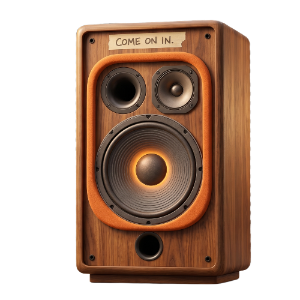
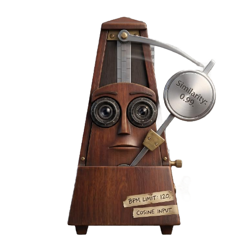
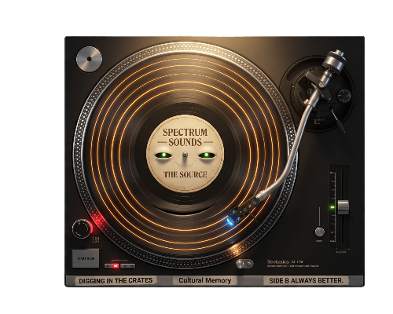
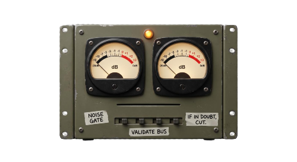
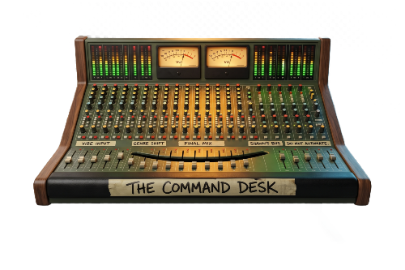
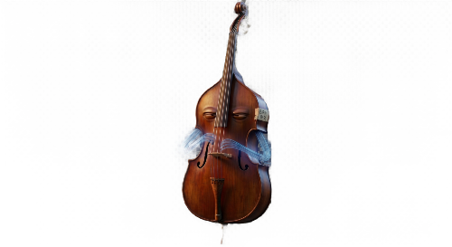

Music Theory
Explained recommendations with live retrieval, cosine scoring, Glass Box reasoning, and critique loops. Evidence over intuition. Every recommendation earns its place.
The Seven Agents
Output: 5-SONG TRAJECTORY | SCORING: 4-DIMENSIONAL VECTOR SPACE
Cass
INPUT + OUTPUT HANDLER
CLI orchestrator. Accepts TasteProfile vectors (energy, valence, danceability, acousticness) and preference tags. Passes through Gatekeeper safety checks. Renders final trajectory with rich terminal UI including character panels, scoring tables, and Glass Box explanations.
Misty
DUAL-SOURCE RETRIEVAL
Parallel ThreadPoolExecutor threads Last.fm + Radio Browser API calls. Merges both catalogs into SongFeature list. Optional MeloData 3-phase BPM enrichment (ISRC search → batch features → catalog discovery). Graceful fallback if one source fails.

Tempo
COSINE SIMILARITY SCORING
Pure NumPy 4D base (energy, valence, danceability, acousticness). Extended to 5D with BPM when MasterMix active. Min-Max normalized. No LLM—deterministic math. Per-dimension breakdown shows contribution of each feature to total score.

Prestige
GLASS BOX EXPLANATION
Claude Sonnet generates 3–4 sentence explanations for top candidates. Names dimensions with values. Cites similarity scores. Lists overlapping tags. Explains cultural context (genre/tradition → dimensional alignment). Enforces checklist compliance.

Hertz
QUALITY CRITIQUE + LOOP CONTROL
Claude Haiku evaluates explanation set quality. Confidence threshold 0.7. Requests re-retrieval if below threshold and loop_count < 3. Max 3 iterations ceiling. Approves and advances to Maestro on pass or ceiling.

Maestro
TRAJECTORY SELECTION + RANKING
Selects exactly 5 songs from scored candidates. Orders as listening arc. Weighs source diversity, tag overlap, confidence scores. Generates single-sentence trajectory_note describing the narrative flow through the sequence.

Base
SESSION NARRATOR (UI)
Rich terminal rendering via Rich library. Character intro panels. Scored songs table. Per-track Glass Box card. Trajectory arc description. Agent log with timestamps and status at each step.
Live Data Sources
Last.fm + Radio Browser parallel retrieval. Optional MeloData for BPM-aware catalog discovery. Graceful degradation if one source fails.
Evidence-Based Ranking
Deterministic cosine similarity math. No hidden LLM scoring. Per-dimension breakdowns show exactly why each song ranked where it did.
Multi-Agent Critique
Hertz evaluates explanation quality with confidence thresholds. Up to 3 re-retrieval loops. Fail-closed gatekeeper blocks harmful input before graph starts.
Ready to generate recommendations?
Clone the repo. Install dependencies. Define a TasteProfile with audio dimensions and mood tags. Run the pipeline. Get back five explained songs with evidence, confidence scores, and trajectory narrative.